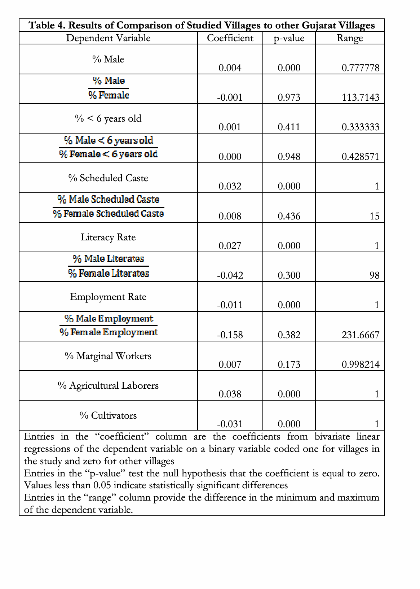

Appendix 3: Age, gender, and sub-caste effects
In addition to the use of the untouchability indexes to analyze the questionnaire data, the research team designed the study to assess the extent to which different segments of the population perceive different practices in the community. To accomplish this, survey implementation in some villages was stratified so that more homogenous demographic groups were surveyed separately. In our focus group of enumerators, there was some anecdotal evidence of both age and gender effects; therefore, the research team sought to explore these effects further. The evidence of these effects should not be over-emphasized, based on the resulting data. The enumerators suggested that in community meetings segments of the population, including children and women spoke up, registering their views. So, we have no reason to believe that the differences owing to age, gender or sub-caste manifested in biased estimates of the extent of untouchability.
To assess the age-effects, we simply estimated regression models for each of the indices (8 types of untouchability) as a function of the interaction between household-community survey and age-group. Here, though we originally coded five age groups, the youngest three groups (<12, 13-19 and 20-30) were combined because of small numbers of observations in the first two categories. The remaining categories are 31-50 and >50. What we find is that household surveys often identify significantly lower levels of untouchability. However, we found no effects of age, once the household-community distinction was taken into account. While there could be reason to think that younger or older people might experience untouchability more acutely, there is no evidence supporting hypotheses like these.
To assess gender effects, we engaged in a similar effort to the one used for age. Here, however, we considered the interaction of household-community distinction with respondent gender. Again, we found no significant effects. Once the household-community distinction was taken into account, there were no significant differences in the scale scores of men versus women.
To assess sub-caste effects, we grouped the sub-castes into four groups – Vankar, Rohit, Valmiki and others (Christian, Garo-Brahmin, Nadiya, Nat , Senma, Tirgar and Turi). Here, we find significant effects. Specifically, in all cases, the Valmiki report higher levels of untouchability than all other sub-castes. Given the placement of the Valmiki at the bottom of the Dalit hierarchy, this finding seems quite reasonable. The other two identified sub-castes (Vankar and Rohit) seem to behave quite similarly – often identifying higher levels of untouchability than those sub-castes grouped together as “other”. The sole exception to this is happens with caste-based occupations where the Rohit identify significantly less untouchability than any other group.
Ideally, we would prefer that all of these demographic distinctions produced null findings – meaning that all segments of the Dalit population are unified, on average, in their assessment of untouchability. However, the effects we do find are justifiable and in no way impugn the conclusions made above regarding the index.

Text transcription of Table 4
Table 4. Results of Comparison of Studied Villages to other Gujarat Villages Dependent Variable Coefficient p-value Range % Male 0.004 0.000 0.777778 -0.001 0.973 113.7143 % < 6 years old 0.001 0.411 0.333333 0.000 0.948 0.428571 % Scheduled Caste 0.032 0.000 1 0.008 0.436 15 Literacy Rate 0.027 0.000 1 -0.042 0.300 98 Employment Rate -0.011 0.000 1 -0.158 0.382 231.6667 % Marginal Workers 0.007 0.173 0.998214 % Agricultural Laborers 0.038 0.000 1 % Cultivators -0.031 0.000 1 Entries in the “coefficient” column are the coefficients from bivariate linear regressions of the dependent variable on a binary variable coded one for villages in the study and zero for other villages Entries in the “p-value” test the null hypothesis that the coefficient is equal to zero. Values less than 0.05 indicate statistically significant differences Entries in the “range” column provide the difference in the minimum and maximum of the dependent variable.